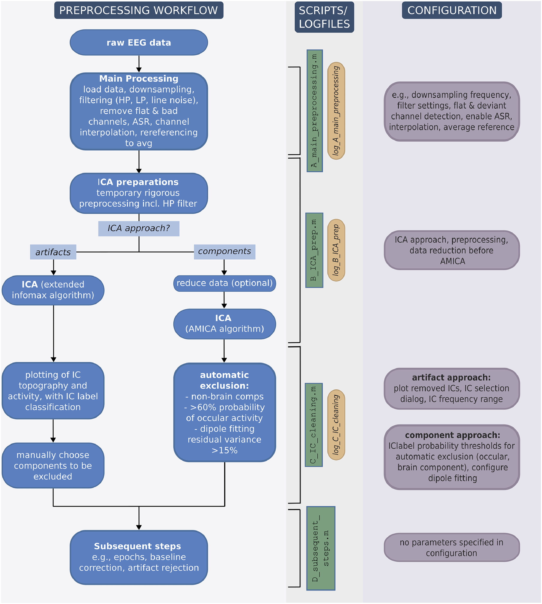

论文背景与介绍
应用面向：数据集成(data integration)
做法：统一预处理流程(harmonize EEG preprocessing)
支持机构：the German Center for Child and Adolescent Health (DZKJ)
论文内容
Introduction
标准化预处理的目的是保证数据质量和跨研究间的可复现性（reproducibility）。
EEG分析方法进步飞速（源定位、脑区相关；机器学习），然而，分析结果强依赖于预处理，但预处理仍然是神经生理数据分析中最欠缺标准化的步骤之一，预处理方法的不同会导致不一致性。
“The preprocessing of EEG data remains one of the least standardized steps in neurophysiological data analysis.” 。(Böttcher 等, 2026, p. 2)
“Differences in the applied filters, artifact correction methods with varying impact on the data, and different quality control criteria lead to inconsistencies across studies and research sites” (Böttcher 等, 2026, p. 2)
| reproducibility | replicability |
|---|---|
| 同一数据+同一方法 | 新数据+同一方法 |
之后介绍了本文目的，简单介绍CLEAN-EEG preprocessing pipeline。
Dataset
介绍本文使用的样例数据
数据：健康青少年，N=10，5男5女，年龄$11.7\pm 2.8$，Go/Nogo任务
条件记录：采样率500Hz，BrainAmp DC放大器，BrainCap脑电采集帽（60个Ag/AgCl电极，参考电极是Fpz，结点电极位置在$\theta=58,\phi=78$），没有采集眼电。
Data availiability
代码链接：https://gitlab.mn.tu-dresden.de/actionlab/clean-eeg-preprocessing-pipeline/
数据链接：http://doi.org/10.5281/zenodo.16739024
Requirements
EEGLAB（MATLAB 2020a之后的版本）
the CLEAN pipeline
CLEAN流水线利用了一系列后续的MATLAB脚本。所有脚本都使用共享配置文件，其中可以定义最关键的参数和设置。每个脚本都会生成一个日志文件，保存在输出路径中，存储与脚本相关的所有参数，并按照开放科学的最佳实践指南记录相应脚本的工作流程（Pernet 等，2020,2021）。以下详细说明了各项预处理步骤及作者提出的参数。
数据秩（rank）：提供了数据线性独立成分的个数，与通道数有关。数据桥连、重参考或线性插值坏道导致秩亏（rank deficiency）。秩亏会导致ICA分解结果出现“幽灵”成分。

Configuration
关于配置文件中参数调整的说明
Logfiles
- 双数据结构分层记录
日志记录采用 “被试专属 + 全被试汇总” 的双层结构，确保数据追溯的精准性与全面性：
- 单被试级记录：每一步预处理操作都会写入被试专属的 EEGLAB 数据结构
EEGTMP的.comments字段中。这一步实现了单被试处理流程的精细化溯源，能精准定位每个被试的独立操作细节。 - 全被试级汇总：所有被试的全部预处理步骤会被统一整合到 MATLAB 表格
logtbl中。该表格为每个预处理脚本分配独立条目，实现跨被试的流程横向对比与整体汇总。
- 文件输出与命名规范
日志文件以 MATLAB 格式保存，配置了严格的命名规则与存储路径：
- 存储格式：保存为 MATLAB 格式化数据文件，后缀为
.mat。 - 命名规则：文件名遵循固定模板 ——
log_<SCRIPT>_<DATETIME>.mat。其中<SCRIPT>指代对应预处理脚本的文件名，<DATETIME>为脚本开始运行时的当前日期与时间字符串。 - 存储路径：
logtbl被保存至输出文件夹（output folder），与处理后的 EEG 数据文件同目录，便于后续关联查阅。
Main processing
| 处理步骤 | 描述 |
|---|---|
| EEG数据格式 | 本文例子中使用的是Brain Vision data(插件 bva-io，函数pop_loadbv() )。 |
| 数据集选择和输出文件 | 用EXCEL文件保存关键信息 |
| 降采样 | 推荐：250Hz（低频段分析，$\theta - \beta$）,为避免混叠，滤波频率应该i小于奈奎斯特频率（$f_{cut-off}<\frac{f_{sample}}{2}$） |
| 滤波 | ERP/TFT可以用默认的滤波器参数，连接性分析（conectivity analysis）需要更严格的参数控制。run_firfilt()->pop_firws(), Kaiser窗FIR滤波器。过渡带影响：越窄，阶数越高，频率选择性越高，但会导致计算时间长、时域失真（引入边缘伪迹）；越宽，不感兴趣频段的能量无法被充分衰减。 为避免边缘效应，应该在连续数据/长片段上滤波 1.CLEAN流程中使用了截止频率为 0.5Hz，过渡带宽因子为2，过渡带宽为1Hz的高通滤波器->限制基线漂移，慢波需要更低的截止频率。ICA对低频漂移（主导了数据的方差结构，原因如出汗）很敏感，推荐在ICA使用临时高通滤波器（截止频率在1-2Hz）2.低通滤波器的陡峭度（steepness）决定高频噪声被去除的程度。CLEAN中默认截止频率为 40Hz，过渡带宽因子为0.25，过渡带宽10Hz。连接性分析需要更更宽的过渡带宽和中等的过滤器陡峭度。陡峭的过滤器会导致时域失真（相位失真->连接性分析有问题） |
| 线噪声去除 | 50Hz，伴有100Hz谐波。传统陷波滤波器（窄阻带的带阻滤波器）会使频谱上出现一个凹坑，这会导致依赖于精确相位关系的分析出现问题。除此之外，陷波滤波器经常会导致频谱失真、边缘剧变、振铃伪影，不能适用于工频噪声的非平稳变化或通道间的差异。 现有流程中，两阶段自适应方法： 1.Zapline Plus clean_data_with_zapline_plus()，ZapLine Plus将频谱峰值检测和空间滤波器结合，去除窄带、非平稳的线噪声成分。2.Cleanline插件 pop_cleanline(),Cleanline使用多窗谱回归评估并减去正弦噪声成分，去除空间滤波后残留的振荡成分。有使用条件：Zapline Plus显示噪声抑制不足（残留噪声能量与周围频谱的比值超过某个预设值，clean_data_with_zapline_plus()会返回清理后的噪声比例，也可以使用compute_noiseratio()）。阈值设置：变量conf.linenoise.max_rationoise，默认为1.1去除线路噪声的决定应考虑分析带宽、滤波器特性以及记录数据的频谱分布。 |
| 坏道检测 | 坏道：平坦通道（flat）和异常通道(deviant) flat channels: detect_flatchan()，推荐时间窗5s，阈值1E-6。但较为平坦的短段可能无法被检测到，应该在后续基于分段的伪迹去除中被去掉（直接删除整个数据段）。deviant channels: clean_channels()，推荐使用默认参数。评估通道间相关性和线噪声水平。有图（Bad channels plot）输出（数据质量检查） |
| ASR去除伪迹 | ASR在ICA之前衰减不规则、高幅值的瞬态伪迹，同时不丢弃数据段。高幅值的瞬态伪迹会严重扭曲数据的协方差结构，影响后续的预处理步骤，尤其是ICA分解。ASR处理一定要小心，避免过度清理。 在CLEAN流程中，ASR使用函数 clean_asr()（clean_rawdata EEGLAB plugin）。参数推荐：爆发检测的标准差阈值（值越大，越宽松），适度起始值 SD=20，推荐根据数据量调整该值。ASR目的不在于重建大部分数据集，在中等干净的数据集中，SD值取20-30，ASR通常能重建约5-15%。推荐对超过30%ASR修正率的数据进行手动检查，这些数据要么噪声不常见要么参数设置比较激进。 |
| 通道插值 | 球面样条插值pop_interp()，关于插值顺序，建议不同。EEGLAB默认的插值方法依赖于球面样条，会给后续ICA处理引入秩的问题，为避免这一问题，插值应在ICA之后；然而，如果缺失多个通道，在重参考前进行插值可能是有利的，因为通道缺失导致的分布不均可能会在平均参考时引入半球偏置。CLEAN流程支持两种方法。默认按照EEGLAB/Makoto 预处理流程。 关于通道插值引入秩亏：ICA表现依赖于有效秩和数据协方差矩阵的数值情况，尽管由于浮点数精度和空间平滑，球面样条插值没有创建直接线性关系，但它产生了近共线的通道，这回产生病态条件的数据矩阵（协方差矩阵的最小特征值接近0）->有效秩缺损。这样的病态条件会降低ICA分解的稳定性和成分分解质量。 |
| 重参考 | 为了减少重参考电极上噪声、神经活动对其他电极的影响。方法一：转换至其他电极，如双侧乳突/双侧耳垂参考，但问题是没有一个脑电帽会专门记录乳突的信号。 方法二：全平均参考AVGR，能减少位置偏差，适合做源分析（可以减少模型误差）。当电极数有限（$\leq 32$）或电极分布不均匀时，要避免使用AVGR，因为AVGR会使参考电位（所有通道电位均值）失真。 方法三：REST(Reference Electrode Standardization Technique)，通过数学方法将数据变换为使用头模型近似无穷远的参考，对源分析和连接性分析很有用，对中等电极密度也适合。重要的是，为了优化性能，REST需要一个精确的头模型（CSD，电流源模型，严格来说并不算是）。 在CLEAN流程中，推荐AVGR pop_refef()，MATLAB不能在大规模自动预处理中灵活调用REST算法。为了避免秩亏，在重参考前会插入一个零值通道，之后去除。 |
| 保存数据和日志 | 命名和保存，详情需下载代码查看。 |
ICA and component selection
Script B执行IC分解并保存成分，Script C执行成分选择和重建。
两个途径：伪迹去除和IC提取（降维）。
有效秩问题：为弥补插值导致的有效秩缺失，ICA会被计算在一个维度和数据协方差矩阵的评估有效秩维度相同的子空间。
ICA preparations
载入数据->随机数生成器：设为默认能产生稳定成分，但对糟糕的或不充分的ICA分解，改变生成器可能有用。
在临时数据上做了一些预处理来提高ICA性能（不会在最终的数据上）：
- 对基线漂移敏感（会改变数据的方差结构，来自出汗或是电极阻抗变化），因为ICA希望处理的是平稳数据（数据均值和方差不要随时间有剧烈变化）->使用高通滤波器，截止频率在1-2Hz
- 去除不规律伪迹（已经在ASR步骤中去除过了）说明：ICA会将所有的数据点都进行处理，数据是分段的还是连续的无关紧要。分段成1s的小片段->去趋势
detrend()->拒段pop_jointprob()
数据尽可能多，ICA性能会提高。不过，建议排除与研究问题无关的较长时间活动，如休息或引导。并没有明确的规定决定多少数据量是足够的，但有EEG社区推断出的经验法则：
- 对$N$个稳定成分，推荐每个通道有$kN^2$样本点，$N$是通道数，$k$是乘积因子，推荐$k=20(N\leq 64);k=30(N>64)$。采样率要在100-500Hz。更高的采样率尽管能提供更多的数据点，但并不能增加频带信息。
- 一种不那么保守的方法是确定每个秩的样本数量。这里的建议是至少准备20个，最好是50个样本。这两个数值都会在日志文件中报告。？？？
Artifact rejection approach
半自动的：IClabel+人眼筛选。IC算法Extended Infomax ICA
Component extraction approach
全自动方法提取IC。ICA算法AMICA。有排除标准。使用了dipfit插件（dipole拟合需要导入头模型，默认是10-05，否的话自行导入头模型文件）
提取IC成分的目的是什么？
Subsequent steps
数据分段pop_epoch()和分段后的基线校正pop_rmbase()/伪迹去除pop_jointprob()。
分段是一个比较复杂的任务，依赖于实验设计和标记，鼓励使用者去调整ta们自己的后续处理方法。
Output structure
文件类型和保存路径。
Quality assessment
RMS（root mean square，均方根）
variance heatmap，每个通道的方差图
坏道检测-The number of bad channels, including deviant and flat channels
通道插值-the ratio of residual noise power to the surrounding spectrum
ASR-the percentage of reconstructed data points，5%-15%比较合适
ICA处理-the Percentage of Total Variance Explained by Artifacts ($Var_{Art}$)
使用者要根据提供的日志文件和自动生成的数据质量图 小心回顾每一不预处理。
Discussion
促进用户主动交互，而不是依赖被动的自动化流程。
一些自动化处理脚本，比如Automagic，很方便使用、数据质量也比较好。但是，好的预处理是需要对每个数据集的了解的。
“Transparency and reproducibility have the highest priority in empirical research” (Böttcher 等, 2026, p. 12)
关于秩的问题：EEG束形成（beamforming，一种源定位方法）和连接性分析需要数据是最小秩亏损的。
“As there is no ground truth of data in neurophysiology, creating the ‘perfect’ pipeline is impossible.” (Böttcher 等, 2026, p. 13)
else
恭喜你阅读完啦。
补充
频谱泄露和拖尾现象